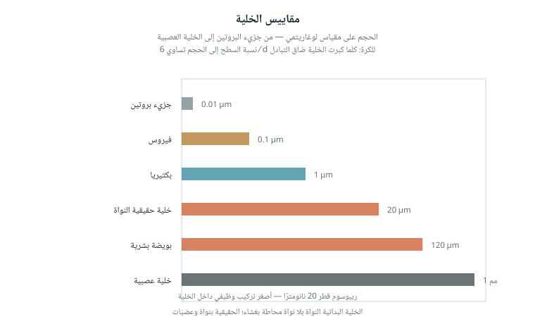

الخلية
Cell
أصغر وحدة حيّة قادرة على الاستمرار والانقسام: غشاء يفصل داخلًا عن خارج، ومادّة وراثية، وآلات بناء الطاقة والبروتين. الحدّ الفيزيائي لحجمها هو نسبة السطح إلى الحجم، إذ تنخفض إلى 6 ⁄ d للكرة فتُقيّد التبادل عبر الغشاء.
الخلية هي الحدّ الذي يصير عنده التركيب حياة. تعمل بثلاث مقومات لا تصحّ إحداها دون الأخرى: غشاء دهني ثنائي الطبقة يفصل ويُنظّم الدخول والخروج، ومادة وراثية تُخزَّن وتُنسخ، وجهاز بنائي يُحوّل الطاقة ويصنع البروتين. حجمها في حدود الميكرومتر لأن أصغر تركيب وظيفي فيه ريبوسوم قطر عشرين نانومترًا، وأكبر حجم يقبل الانتشار الكافي بالغشاء.
والخلايا نوعان: حقيقية النواة لها نواة وعُضيّات غشائية، وبدائية النواة بلا نواة ولا عُضيّات. الفرق ليس تصنيفيًّا فحسب: الأوّل يفصل العمليات في حيّزات فيتيح تخصّصًا وتنظيمًا أوسع، والثاني أسرع في النموّ واقتصادي في الحجم، ولهذا تسود البكتيريا في الأوساط الفقيرة والمتغيّرة.
كيف تعمل الظاهرة؟
الغشاء البلازمي طبقتان من الدهون الفوسفورية تحمل رؤوسًا محبّة للماء إلى الخارج وذيولًا كارهة له إلى الداخل، فتُشكّل حاجزًا لا يمرّه إلا ما هو صغير أو محبّ للماء. الانتقال يحدث بثلاث آليات: انتشار بسيط مع تدرّج التركيز، وانتشار مساعد عبر بروتينات ناقلة، ونقل نشط يستهلك ثلاثي فوسفات الأدينوسين ليحرّك المواد ضد تدرّجها. وتُنتج الطاقة في المتقدرة بسلسلة نقل إلكترونات تبني تدرّج بروتونات عبر غشاء داخلي، فيتحوّل التدرّج إلى عمل ميكانيكي لإنزيم صناعة الطاقة.
العلاقة بالأرقام
كرة قطرها d لها نسبة سطح إلى حجم 6 ⁄ d: خلية بقطر 1 ميكرومتر نسبتها 6 ميكرومتر⁻¹، وبقطر 100 ميكرومتر تصير 0.06 ميكرومتر⁻¹، أي مئة ضعف أقل. ولهذا تبقى البكتيريا نحو 1–2 ميكرومتر، وكرية الدم الحمراء نحو 8 ميكرومترات، وبويضة الإنسان نحو 100 ميكرومتر لكنها لا تعتمد على التبادل السريع في كل حجمها. ويُقاس حجم الخلية عمليًّا بحدّ قدرة المجهر الضوئي الذي يفصل نحو 0.2 ميكرومتر، فيراه المجهر الإلكتروني حتى 0.1 نانومتر.
مفاهيم متقاربة
الخلية ليست الفيروس: الفيروس مادة وراثية في غلاف بروتيني بلا استقلاب، لا يتضاعف إلا داخل خلية. والخلية ليست النواة: النواة عضيّة واحدة داخل الخلية الحقيقية، والخلايا بدائية النواة تعيش بلا نواة. والخلية ليست النسيج: النسيج تجمّع متخصّص من خلايا متشابهة، والعضيّة تركيب داخل الخلية. والنواة ليست المصنع الوحيد: المتقدرة تنتج الطاقة من جينومها الخاص في بعض الحالات، والبلاستيدة في النبات لها جينوم مستقل أيضًا.
حدود التطبيق
لا حدّ أعلى صارمًا لحجم الخلية بل قيد هندسي: الخلايا الضخمة تُحلّ المسألة بأنبوبية الشكل أو بدمج عدة أنوية أو بحركة سيتوبلازم نشطة تنقل المواد بدلًا من الانتشار. والحدّ الأدنى يقترب من أصغر جينوم مستقلّ، فتتراوح البكتيريا المُلزَمة بالتكفّل بين 200 و400 نانومتر وتحتاج مضيفًا. وصور «الخلية ككيس» مضلّلة: السيتوبلازم مزدحم بالبروتينات إلى حدّ يمنع الانتشار الحرّ، فالنقل داخل الخلية يحدث بالمحرّكات الجزيئية لا بالانتشار وحده.

| الكمية | القيمة | المصدر |
|---|---|---|
| قطر الريبوسوم | 20 نانومتر | [1] |
| طول خلية الإشريكية القولونية | 2 ميكرومتر | [1] |
| قطر كرية الدم الحمراء البشرية | 8 ميكرومتر | [2] |
| نسبة السطح إلى الحجم لكرية قطرها 1 ميكرومتر | 6 ميكرومتر⁻¹ | [3] |
المصادر
- 1 Molecular Biology of the Cell — cell size and scale — NCBI Bookshelf, National Center for Biotechnology Information. www.ncbi.nlm.nih.gov/books/NBK21054/ · اطُّلع عليه 2026-11-16
- 2 Cell — structure, size and organelles — Encyclopaedia Britannica. www.britannica.com/science/cell-biology · اطُّلع عليه 2026-11-16
- 3 OpenStax Biology 2e — Studying Cells — OpenStax. openstax.org/books/biology-2e/pages/4-1-studying-cells · اطُّلع عليه 2026-11-16
استشهد بهذا المصطلح
الصيغتان مبنيتان من بيانات الصفحة نفسها: العنوان والتاريخ ورابط النسخة المنشورة.
الخلية — Cell. (2026). ديوان المعرفة — انفراد. https://infiradev.com/diwan/terms/cell.html
@misc{cell2026,
title = {الخلية},
titleaddon = {Cell},
howpublished = {{ديوان المعرفة — انفراد} — مرجع علمي عربي},
year = {2026},
url = {https://infiradev.com/diwan/terms/cell.html},
urldate = {2026-11-16},
note = {مراجعة علمية: مراجعة آلية — ديوان المعرفة (روابط المصادر + عقد المحتوى + وجود الرسم) 2026-11-16}
}
راجعه: مراجعة آلية — ديوان المعرفة (روابط المصادر + عقد المحتوى + وجود الرسم) 2026-11-16 · 2026-11-16 · آخر تحديث 2026-11-16